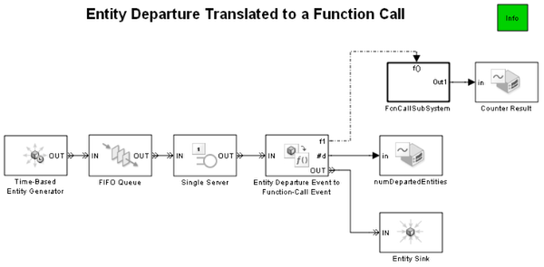
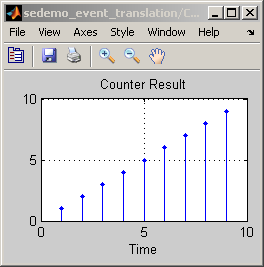
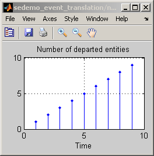
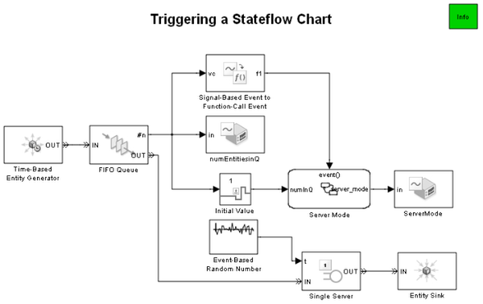
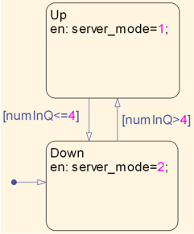
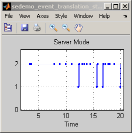
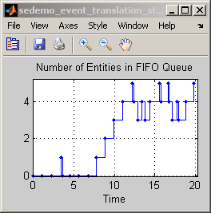
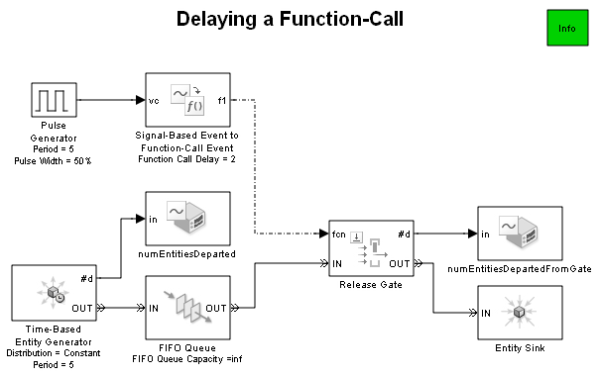
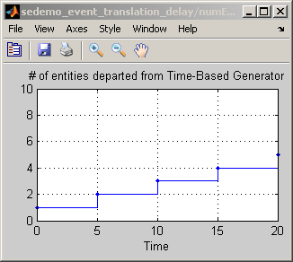
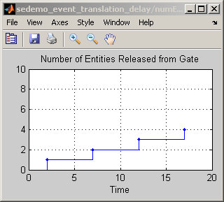

Translating Events to Functions Calls
This demo illustrates how to generate a function call when an event takes place. This event can be a signal based event, a function call input or an entity departure event. You can use the generated function call to trigger function-call subsystems, Stateflow® blocks or other blocks that accept function call inputs. The following sections demonstrate these features.
Contents
Triggering a Function Call Subsystem by an Entity-Departure Event to Function-Call Event Block
This model demonstrates how an entity departure event can cause a function call to trigger a function-call subsystem. Entities advance to the Entity-Departure Event to Function-Call Event block after service completion from the Single Server block which generates a function call. The function call causes the FcnCallSubSystem block to execute. Inside the FcnCallSubSystem block is an Embedded MATLAB™ Function block that increments a counter for every execution of the subsystem. Open this model
  Calling a Stateflow Chart by Signal-Based Event to Function-Call Event
This model illustrates how a signal-based event can cause a function call. In this model the function call causes the execution of a Stateflow chart. The #n output from the FIFO Queue block indicates the number of entities in the queue. The Signal-Based Event to Function-Call Event block translates a change in the signal to a function call that calls the Stateflow chart. The state of the Stateflow chart is Up if number of entities in the FIFO queue exceeds 4 and Down if the number of entities in the FIFO queue is less than or equal to 4. Open this model
   Delaying a Function-Call generated by Signal-Based Event to Function-Call Event Block
This model illustrates how to delay a function call generated by a Signal-Based Event to a Function-Call Event block. After the function call is generated, the Release Gate block opens the gate and allows arrival of the pending entity. The scopes illustrate the delay between the signal based event and the function call.The delay can be specified via a parameter or an input signal. Specifying the delay via an input signal allows you to dynamically change the delay value during simulation. Please see the Asynchronous Clock Domains demo for an advanced application of this feature. Open this model
  